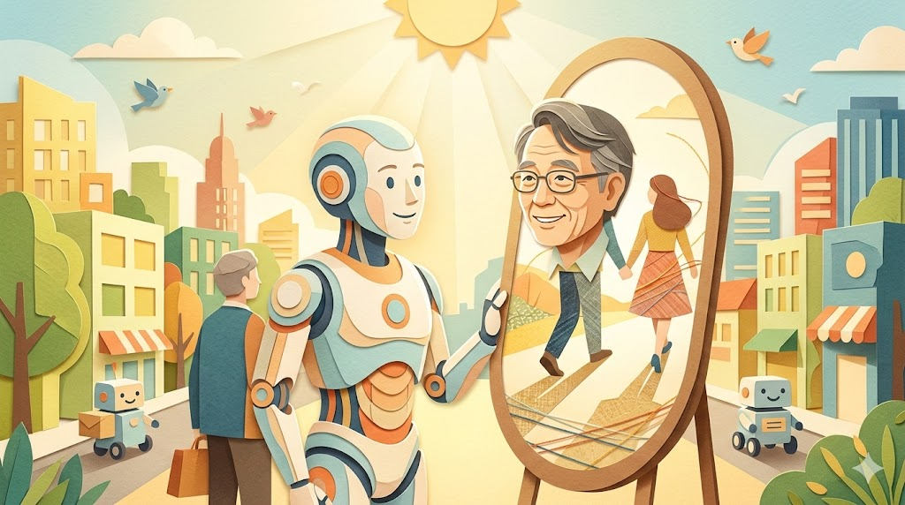

If thou gaze long into an abyss,
the abyss will also gaze into thee.

余談ながら、筆者はこの令和八年三月の静寂なデスクの前で、ある種の心地よい「揺らぎ」を感じている。窓の外を行き交う配送ロボット、あるいは受付で微笑むアンドロイド。彼らと目が合う瞬間、私たちの脳は0.1秒にも満たない速度で、相手を「生命」か「物体」か判別しようと激しく火花を散らす。
その火花こそが、日本が誇るロボット工学の第一人者、大阪大学の石黒浩教授が長年見つめ続けてきた深淵――「不気味の谷（Uncanny Valley）」の正体である。素材テキストが示す通り、石黒教授にとってこの「谷」は避けるべき壁ではなく、人間を理解するための最も純粋なヒントに他ならない。
一、構造的衝突：『ゾンビ』という名の境界線
1970年に森政弘教授が提唱したこの仮説は、2026年の今、より科学的な手触りを持って再定義されている。ロボットが人間に近づくほど好感度は上がるが、ある一点を超えた瞬間、私たちは猛烈な不快感に襲われる。特に「動き」が加わった際の違和感は、脳に『死体』や『ゾンビ』を連想させ、生物的な拒絶反応を引き起こすのだ。
「不気味の谷」は、人間らしさの微妙なズレを脳が敏感に検知している証拠。つまり、谷を研究することは、人間の認知の仕組みをハックすることと同義なのだ。
石黒教授のエピソードは痛烈だ。自身の分身「ジェミノイド」や、愛娘をモデルにした機体を制作した際、当時幼かった娘さんが恐怖で固まったという事実は、まさに不気味の谷のど真ん中に旗を立てた瞬間であった。手の震え、関節のわずかな遅延――その「非人間性」が、皮肉にも「人間とは何か」を鮮明に浮き彫りにしたのである。
💡 ファクトチェック：2026年のアンドロイド設計
- 平均化の魔力: 最新のアンドロイド「ERICA（エリカ）」などは、特定個人ではなく複数の顔を「平均化」して設計することで、脳の違和感を中和し、谷を回避している。
- ゾンビ感の克服: かつて不気味さの元凶だった「微細な震え」は、現在ではAIによるエンドツーエンドの学習により、周囲の空気に同期する「ゆらぎ」へと変換されている。
二、多角的な視点：『不気味』が『愛着』へ変わる日
社会的背景を見渡せば、2026年の私たちは、かつて「不気味」と呼んだものとの共生を余儀なくされている。しかし、石黒教授の指摘通り、一箇所のズレで拒絶反応が起きるという事実は、裏を返せば、私たちがそれほどまでに「他者を人間として認めたい」と切望していることの裏返しではないか。
石黒教授のプロジェクトは、今や物理的な身体の限界すら超えようとしている。操作者の意識がアンドロイドへと転移する現象は、アイデンティティが肉体に縛られない未来を示唆している。不気味の谷を完全に越えた先にあるのは、ロボットという「モノ」ではなく、私たちの意識を拡張するための「器」なのかもしれない。
不気味の谷とは、人間が人間であるための「最後の聖域」を守るセンサーのようなものだ。石黒教授がその谷を越えようとする歩みは、私たちが無意識に閉じ込めていた「人間らしさの本質」を一つずつ解放していく作業に見える。
2026年の春、微笑むアンドロイドの瞳の奥に、あなたは何を見るだろうか。そこに映っているのは、きっと精巧な機械ではなく、鏡のように反射された「あなた自身」の定義なのだ。
🛒 おすすめ関連商品
![【中古】 人と芸術とアンドロイド / 石黒浩 / 日本評論社 [単行本]【メール便送料無料】【最短翌日配達対応】](https://thumbnail.image.rakuten.co.jp/@0_mall/comicset/cabinet/08635394/bknbxbsph7uudn3x.jpg?_ex=128x128)
¥1,330
![アンドロイドはマンションの夢を見るか？ 【電子書籍】[ 石黒浩 ]](https://thumbnail.image.rakuten.co.jp/@0_mall/rakutenkobo-ebooks/cabinet/1824/2000017441824.jpg?_ex=128x128)
¥2,530

¥2,530
📚 参考・関連記事
- 不気味の谷現象 - Wikipedia — 森政弘教授が提唱した概念の基礎知識と、ロボット工学における歴史的背景を体系的に理解できます。
- 石黒浩特別研究所 (ATR) - ジェミノイド — 記事の主役である石黒教授が手掛ける「自分の分身」プロジェクトの公式記録と、最新のアンドロイド研究を確認できます。
- 大阪大学 基礎工学研究科 石黒研究室 — 「人間とは何か」を探求するロボット工学の学術的なアプローチや、ERICA（エリカ）を含む研究成果の詳細が参照可能です。